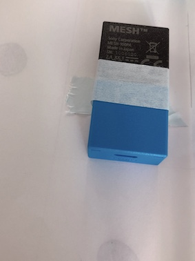

MESH
＜提案サービス＞
サービス①「高齢者の暮らしサポート」
【モチベーション】
これまで、電気ポットなどを使ったお年寄り向けのサービスはあったが、
「食と生活」という角度から、お年寄りをサポートするサービスがあればいいなと考えたため。
【コンセプト】
家族と離れて暮らしているお年寄りが、
安全に料理ができるようサポートし、そして、食事に関する動作を行うことで
元気に生活していることを手軽に伝えられるようにする。
【技術説明】
☆使ったMESH→役割☆
「動き」
→フライパンなどの調理器具に取り付け、フライパンを「置く」動作に反応させる
「LED」
→コンロなどに取り付け、火がつく際の「火」をオレンジ色のLEDで表現
「人感」
→キッチンなどの食事の準備をする際に必ず行く場所に取り付け、
お年寄りがその場へ向かったときにメールを送信する
【動作順序の説明】
①食卓・キッチンを通ることで元気に暮らしているという内容が書かれたメールを
家族に送信に自動送信する。
②調理に使うフライパンをコンロの上に置くと、その振動で火（LED）がつき、
食材に火が通ると、録音した音声でお知らせする。
【失敗の振り返り】
・コンロに置いたときにだけ「動きMESH」を反応させることが上手くいかなかった、
設定をもう少し詳細にできれば上手くいったと思った。
サービス②「ビュッフェの様々なロスをなくす」
（デザート編）
【モチベーション】
ビュッフェでは、一定時間がたつと残っている料理を下げるが、
その際、下げられてしまう料理の量を少しでも減らしたいと考えたため。
【コンセプト】
料理がなくなったとき、どれくらいの食べ物がいつなくなったのか記録し、
適切なタイミングで料理を提供し、ロスを減らすだけでなく、
料理入れ替えの負担を軽くする。
【技術説明】
☆使ったMESH→役割☆
「明るさ」
→設定を「ふさぐものがなくなったら」にして、デザートが置かれる皿の下に設置し、
上に置かれたデザートが無くなった際に反応させる。

「LED」
→設定を「点滅する」にして、デザートが無くなったことを
視覚的に分かるようにする。
【動作順序の説明】
①デザートの皿の下に設置した「明るさMESH」が
「ふさぐもの（この場合はケーキ）」が無くなると反応し、LEDが点滅する。
（実際は、透明な皿の上にデザートを乗せ、
それをMESHが複数の取り付けられた台に置きます）
②①の動作が起こるのとほぼ同時に、「塞ぐもの」が無くなったタイミングをスプレッドシートに
記録していく。
【動作の様子】
【失敗の振り返り】
・「ふさぐものが無くなったら」と設定することだけしかできなかったため、
ビュッフェの麺類など大皿で提供される料理にはこのサービスを使うことはできず、
全ての料理に使えるサービスではなかった。
MESHの配置方法を変えれば可能になったかもしれない。
〈チームに貢献したところ〉
・「食べ物」に関連したサービスについての話し合いに積極的に参加し、
アイデアを出したり、まとめたりした
・金曜日の話し合いでは、グループ全員が意見を出せるような雰囲気づくりを心がけた
・考えたサービスをわかりやすく伝えるために試作品を作った